Modeling the Opening Shot in Pool
This is a model of the opening shot of pool. There are 15 balls arranged in a triangular grid near one end of the table and the cue ball is released towards them from the other end of the table. This demonstration is meant as an exercise in explaining how the continuous time features of Stateflow® can be used to very simply express systems which have a large number of discontinuous events which rapidly (and unpredictably) change the evolution of the system.
Contents
Physics
We make several simplifying assumptions in simulating the system. Perhaps the most important simplification is that we completely ignore the "spin" of the balls. In other words, the over-all state of the system is described completely by the positions and velocities of the individual balls.
Friction Model
We use a simplified friction model where we assume that a ball which is moving is acted upon by a friction force of constant magnitude which acts opposite to the direction of motion. In other words:
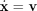
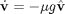
where
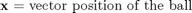
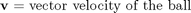
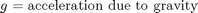
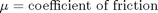
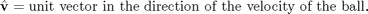
Note however that the friction force acts only as long as the ball is actually moving, not when it is stationary. Thus we should more accurately be saying:
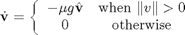
This implies that the friction dynamics of the pool balls have an inherent modal description which we need to account for when we model the system.
Collision Dynamics
Collision between balls is modeled using a simple restoring force model. In other words, we model the balls as being very slightly springy. When the balls are in contact, the reaction force between them is given by:
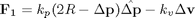
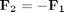
where
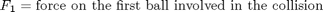
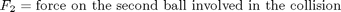
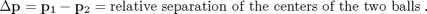
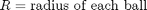
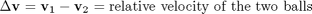
Note once again that any two balls have a restoring force acting between them only so long as

otherwise the restoring force is zero. Note also that since the balls are free to move in two dimensions, we need to account for N^2/2 potential collisions.
Stateflow® Model
The model consists of three Stateflow charts. The chart Init is responsible for the initial setup of the pool balls on the table and interactively letting the user choose the initial position and velocity of the cue ball. Note that this chart is a very thin wrapper around a MATLAB® function sf_pool_plotter.m which does the actual work of plotting.
The middle chart Pool is the chart which actually contains the description of the pool ball dynamics. We will explore this chart in greater detail later.
The final Embedded MATLAB™ block Plot is responsible for animating the balls during the simulation. Once again this is a very thin wrapper around sf_pool_plotter.m
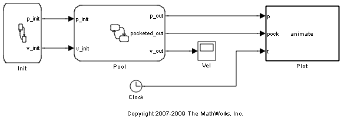Chart: Pool This chart is responsible for the majority of the work during the simulation.
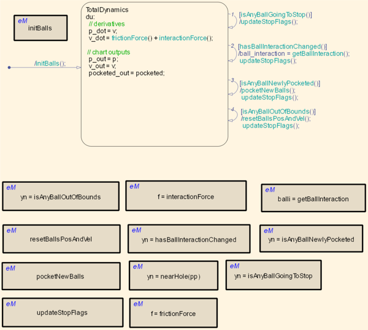In order to represent the dynamics of the pool table, we use the following variables
Continuous Time Variables
- p An Nx2 matrix whose i^th row represents the position of the i^th ball.
- v An Nx2 matrix whose i^th row represents the velocity of the i^th ball.
Discrete Time Variables
- ball_interaction An NxN boolean matrix which represents the interactions between the balls. If ball_interaction(i,j) is true, it means that the i^th ball and the j^th ball are presently in contact. Note that due to the symmetric nature of the system, we only use the upper triangular portion of this matrix.
- stopped An Nx1 boolean vector which represents whether a ball is presently moving or whether it is stopped.
- last_vel An Nx2 vector which represents the velocity of the balls. We update this vector after each incident which could change the velocity of a ball. last_vel and stopped are both used in the function frictionForce which models the friction between the balls and the table.
function f = frictionForce
% This function calculates the forces on the balls due to friction from the
% table. We use a simple constant friction force model between the ball
% and the table.
f = zeros(N,2);
for i=1:N
if stopped(i)
continue
else
% Note that we are using last_vel to calculate the direction of
% the friction force because we are guaranteed that
% |last_vel(i,:)| is large when stopped(i) is false. We cannot
% use v(i,:) directly because this function gets called in minor
% time steps and v(i,:) can become very small at some minor time
% step even if it was large at the previous major time-step.
f(i,:) = -kfriction*last_vel(i,:)/norm(last_vel(i,:)); %#ok
end
end
Simulation Result
Upon simulation, a very bare-bones GUI of a pool table is shown with 15 balls arranged in a triangular grid at one end of the table. The user is asked to place the cue ball and choose its initial velocity. The system then simulates the evolution of the pool balls while animating their motion.